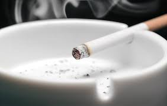
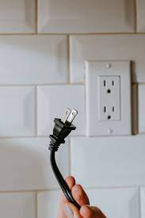
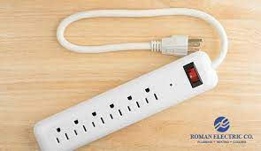

|  |
Avoid Smoking Indoors. If you do smoke, it's crucial to do so in a place with good ventilation and to totally extinguish the cigarette before throwing it. Cigarettes include a number of chemicals and ingredients that might cause them to burn even after you thought they are gone. The flame could potentially start a fire inside your garbage can or outside your house. You may reduce this danger by making sure to smoke outside, keeping an eye out for stray ashes, and making sure to put the cigarette out completely before putting it away. |
|  |
Unplug Appliances You Aren't Using. Anytime there is too much electricity running through something in your house, there is a risk of a fire. Even when they are off, electronics like computers, TVs, game consoles, and many more use electricity. That implies that they are always susceptible to surges or simple overheating that results in a fire. They have a source for a fire as well because to the constant flow of energy into them. You can lessen your chances of starting a fire by unplugging these appliances while you're not using them and, consequently, not paying attention to them. |
|  |
Use surge protectors. Make sure that all of your electronics are plugged into surge protectors, at the absolute least. The most likely time for an electrical fire is during a spike in power, so by putting devices into a surge protector, you can stop worrying about the extra voltage getting to the object and starting a fire. The surge protector prevents that electricity from entering and can significantly lower your chance of starting a fire or its intensity if you do. |